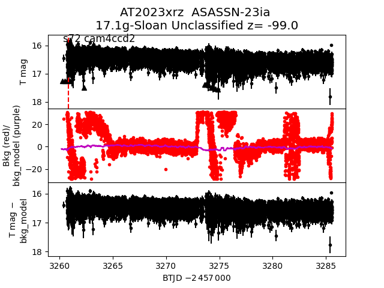
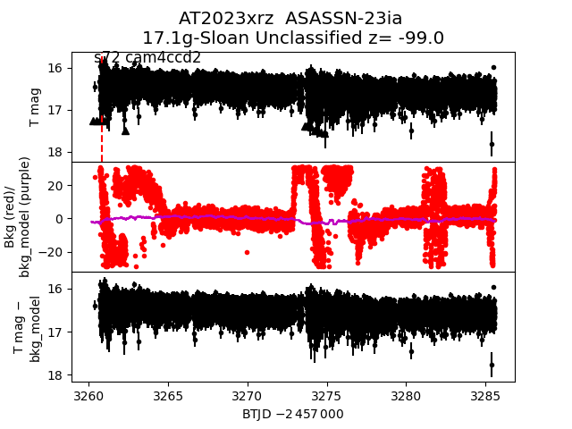

sector72 supernovae (32 total)
Each figure has three panels. The top panel shows the transient light curve, the middle panel shows the local background (estimated in an annulus), and the bottom panel shows a "background-model corrected" light curve. Details about the background model are in the README.
The vertical red line marks the time of discovery reported to TNS. Other useful metadata from TNS is in the figure title.
Note that the top and bottom panel are in magnitudes, while the middle panel is in differential flux units. The magnitudes are calibrated to the flux in the reference image used for image subtraction. Thus, flux from the host galaxy is included in these magnitudes.
3-sigma upper limits are plotted as triangles with no errorbars. A typical limiting magnitude is 19.6 in 30 minutes or 18.4 in 200 seconds (for low backgrounds).
The links allow you to download the light curve data as a text file.
More details in the README.
2024ko
2023zfs
2023xpp
 2023aase
2023xhc
2023xip
2024hw
2023aase
2023xhc
2023xip
2024hw
 2023zjz
2023acfg
2023zvn
2023aalo
2023zjz
2023acfg
2023zvn
2023aalo
 2023zwx
2023zon
2023zwx
2023zon
 2023achj
2023achj
 2023zwv
2023znl
2023zwv
2023znl
 2023abqf
2023abqf
 2023aald
2024pi
2023aald
2024pi
 2023zmx
2023xrz

2023zdy
2024mq
2023xmi
2023zmx
2023xrz

2023zdy
2024mq
2023xmi
 2023zut
2023zut
 2023zof
2023aaaa
2023zof
2023aaaa
 2023zax
2023zax
 2023yyg
2023yyg
 2024ev
2024ev
 2023ybe
2023zno
2023ybe
2023zno